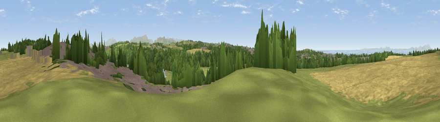

Viewpoint near Workington
#10620 in England · top 58% of its area beats it · near WorkingtonWhere it is
The exact computed spot (NY 01025 29575). Click the marker for map links.
The view, rendered

A 360° render of this exact spot computed from the terrain model, tree cover and land cover — summer colours, afternoon light, calibrated against photographs of famous viewpoints. Real trees, hedges and buildings will differ in detail.
The panorama
Grey silhouette: terrain skyline in each direction (720 bearings, Earth curvature and refraction included). Dashed green: skyline with trees (+15 m) and buildings (+8 m) as obstacles. Blue strip: how far the ground is visible on each bearing.
Where the view opens
Wedge length = distance to the farthest visible ground on that bearing (vegetation-aware). Rings at 10, 25 and 50 km.
What fills the view
31% cropland · 31% grassland · 22% woodland · 10% built-up · 5% water
Angular shares of the visible panorama (visual magnitude), not map area. Landscape diversity 0.63 (0–1 Shannon).
Key numbers
More beautiful places nearby
The staircase of upgrades: each row has a higher view potential than everything closer. Driving times are estimates from straight-line distance, calibrated against real road routing — check an actual route before setting out.
| Place | Direction | Drive | Score |
|---|---|---|---|
| The Howe | WSW · 3 km | ~6 min | 75.1 |
| Viewpoint near Low Moresby | S · 9 km | ~17 min | 76.5 |
| Viewpoint near Moresby Parks | SSW · 11 km | ~21 min | 78.8 |
| Viewpoint near Lamplugh | SE · 12 km | ~23 min | 81.6 |
| Knock Murton | SE · 13 km | ~25 min | 85.5 |
| Blake Fell | SE · 14 km | ~26 min | 86.9 |
| Crag Fell | SSE · 17 km | ~30 min | 89.1 |
| Ullock Pike | E · 23 km | ~38 min | 89.4 |
54.65153, -3.53551 · source: screening · position refined by local search. Computed location — check access rights before visiting.